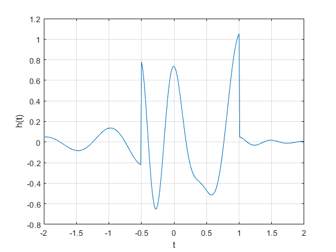
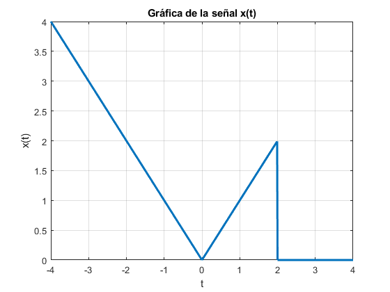
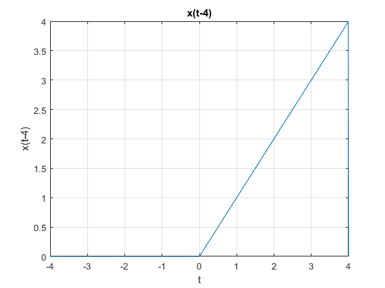
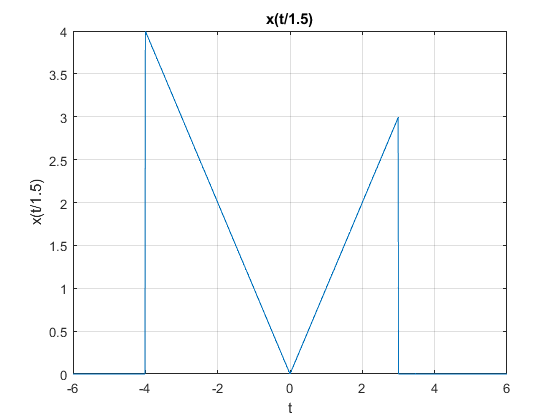
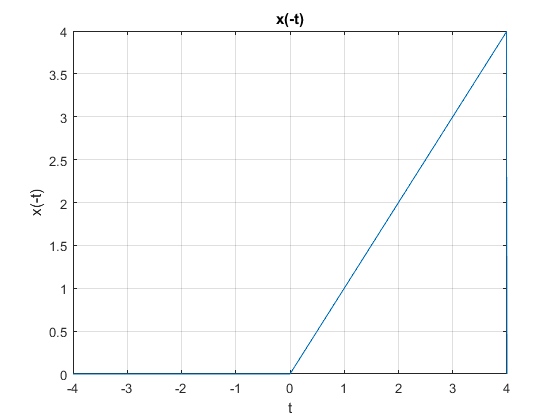
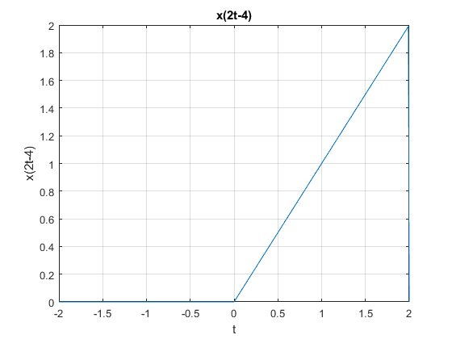
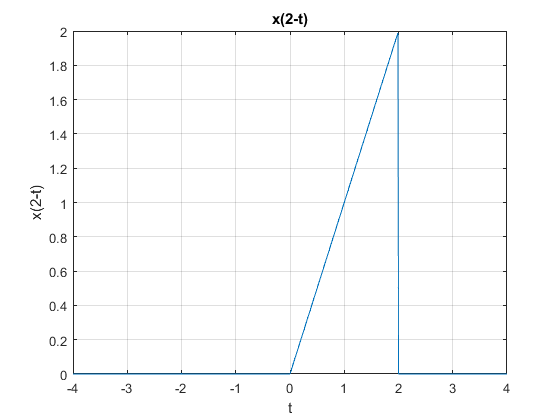
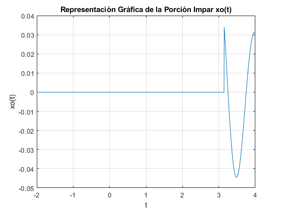
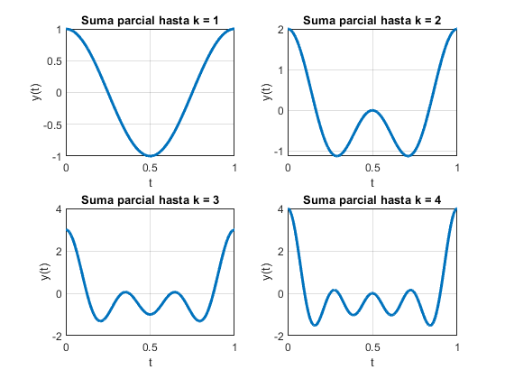

Práctica 3: Señales en tiempo continuo
- Lopez Solano Irvin
- Moreno Castro Jose Pablo
- Pedraza Ocampo Eduardo
- Portillo Martinez Carolina
- Reyes Alvarez Angel
Contents
Objetivo
Hoy vamos a hablar sobre el objetivo de nuestra práctica relacionada con señales de tiempo continuo.
Nuestro Objetivo de la Práctica es el siguiente:
Queremos crear una página web donde podamos presentar y explicar ejercicios resueltos de señales de tiempo continuo utilizando MATLAB. Para lograrlo, vamos a seguir estos pasos juntos:
1. Lo primero es crear una cuenta en [GitHub](https://github.com/) si todavía no la tienes.
2. Después, nos vamos a familiarizar con cómo funciona GitHub, especialmente en lo que se refiere a la gestión de repositorios y cómo cargar archivos.
3. Utilizaremos MATLAB para resolver ejercicios específicos de señales de tiempo continuo.
4. Luego, vamos a crear una página web que incluya una descripción detallada de nuestra práctica (asegurándonos de cambiar la etiqueta de 'Práctica 1' a 'Práctica 3' en el documento HTML) y vamos a agregar un enlace al video que describe el contenido de la práctica (cambiando la etiqueta de 'Práctica 1' a 'Práctica 3' en el enlace del video).
5. Después, alojaremos nuestra página web en GitHub, de modo que cualquiera pueda acceder a ella a través de un enlace.
6. Por último, compartiremos el enlace de la página web y los archivos de nuestra aplicación en la tarea correspondiente en Teams, siguiendo una nomenclatura específica.
Nuestro objetivo final es demostrar nuestra capacidad para utilizar GitHub como plataforma de alojamiento web y para presentar ejercicios resueltos de señales de tiempo continuo de una manera clara y organizada. Esta práctica nos permitirá desarrollar habilidades técnicas, aprender a utilizar herramientas de desarrollo colaborativo y mejorar nuestras habilidades de comunicación al presentar nuestros resultados en línea.
Introduccion
La comprensión de las señales y sistemas es esencial en el mundo de la ingeniería, las ciencias aplicadas y muchas otras disciplinas. Richard Lathi, con su renombrado libro de señales y sistemas, ha proporcionado una sólida base de conocimientos en este campo. Si estás buscando recursos para ayudarte a entender y dominar estos conceptos, has llegado al lugar correcto.
En esta página web, hemos emprendido la tarea de resolver una variedad de ejercicios seleccionados de "Señales y Sistemas" de Lathi. Nuestro objetivo es ofrecerte soluciones claras y detalladas, junto con explicaciones paso a paso, para ayudarte a abordar estos desafiantes problemas de manera efectiva.
Ya seas un estudiante que busca apoyo adicional, un profesional en busca de repaso o simplemente alguien curioso por aprender más sobre señales y sistemas, aquí encontrarás recursos útiles para mejorar tu comprensión. Cada ejercicio resuelto está cuidadosamente explicado, y estamos comprometidos en proporcionarte una experiencia de aprendizaje enriquecedora.
Te invitamos a explorar nuestra colección de ejercicios resueltos y a utilizarlos como referencia en tu estudio de señales y sistemas. Además, si tienes preguntas o necesitas aclaraciones adicionales, no dudes en ponerte en contacto con nosotros.
Acompáñanos en este viaje de descubrimiento y aprendizaje, mientras exploramos los fascinantes conceptos de señales y sistemas, y los aplicamos en la resolución de problemas del mundo real.
Sección 1.11 Lathi
Seccion 1 Problema 1. Se reprodujo la seccion 1.11 de Lathi
f = @(t) exp(-t).*cos(2*pi*t); t = 0; f(t) f(0) t = (-2:2); f(t) plot(t,f(t)); xlabel('t'); ylabel('f(t)'); grid; t = (-2:0.01:2); plot(t,f(t)); xlabel('t'); ylabel('f(t)'); grid; u = @(t) 1.0.*(t>=0); t = (-2:2); plot(t,u(t)); xlabel('t'); ylabel('u(t)'); t = (-2:0.01:2); plot(t,u(t)); xlabel('t'); ylabel('u(t)'); axis([-2 2 -0.1 1.1]); p = @(t) 1.0.*((t>=0)&(t<1)); t = (-1:0.01:2); plot(t,p(t)); xlabel('t'); ylabel('p(t) = u(t)-u(t-1)'); axis([-1 2 -.1 1.1]); g = @(t) f(t).*u(t); t = (-2:0.01:2); plot(t,g(2*t+1)); xlabel('t'); ylabel('g(2t+1)'); grid; plot(t,g(-t+1)); xlabel('t'); ylabel('g(-t+1)'); grid; plot(t,g(2*t+1)+g(-t+1)); xlabel('t'); ylabel('h(t)'); grid; x = @(t) exp(-t).*((t>=0)&(t<1)); t = (0:0.01:1); E_x = sum(x(t).*x(t)*0.01) x_squared = @(t) x(t).*x(t); E_x = quad(x_squared,0,1) g_squared = @(t) g(t).*g(t); t = (0:0.001:100); E_g = sum(g_squared(t)*0.001) E_g = quad(g_squared,0,100) % % %
ans =
1
ans =
1
ans =
7.3891 2.7183 1.0000 0.3679 0.1353
E_x =
0.4367
E_x =
0.4323
E_g =
0.2567
E_g =
0.2562
 Solución al problema 1.2-2
Se soluciona el problema 1.2-2 de Lathi, el cual dice lo siguiente: Para la señal x(t) de la siguiente grafica
t = -4:0.01:4; x = zeros(size(t)); x(t >= -4 & t < 0) = -t(t >= -4 & t < 0); x(t >= 0 & t < 2) = t(t >= 0 & t < 2); figure; plot(t, x, 'LineWidth', 2); xlabel('t'); ylabel('x(t)'); title('Gráfica de la señal x(t)'); grid on; %Para (a) x(t−4) % (b) x(t/1.5) % (c) x(−t) % (d) x(2t−4) % (e) x(2−t) % Solución % a) x(t-4): t = -4:0.01:4; x = zeros(size(t)); x(t >= 0 & t < 4) = t(t >= 0 & t < 4); figure; plot(t, x); xlabel('t'); ylabel('x(t-4)'); title('x(t-4)'); grid on; % b) x(t/1.5): t = -6:0.01:6; x = zeros(size(t)); x(t >= -4 & t < 0) = -t(t >= -4 & t < 0); x(t >= 0 & t < 3) = t(t >= 0 & t < 3); figure; plot(t, x); xlabel('t'); ylabel('x(t/1.5)'); title('x(t/1.5)'); grid on; % c) x(-t) t = -4:0.01:4; x = zeros(size(t)); x(t >= 0 & t < 4) = t(t >= 0 & t < 4); figure; plot(t, x); xlabel('t'); ylabel('x(-t)'); title('x(-t)'); grid on; % d) x(2t-4): t = -2:0.01:2; x = zeros(size(t)); x(t >= 0 & t < 2) = t(t >= 0 & t < 2); figure; plot(t, x); xlabel('t'); ylabel('x(2t-4)'); title('x(2t-4)'); grid on; % e) x(2-t) t = -4:0.01:4; x = zeros(size(t)); x(t >= 0 & t < 2) = t(t >= 0 & t < 2); figure; plot(t, x); xlabel('t'); ylabel('x(2-t)'); title('x(2-t)'); grid on;     
Solucion al problema 1.11-1
Proporciona código MATLAB y su salida que tracen la parte impar xo(t) de la función x(t) =2−t cos(2πt)u(t−π) sobre un intervalo de longitud adecuada usando un número adecuado de puntos.
Definimos el vector de tiempo
t = linspace(-2, 4, 1000); % Personaliza el intervalo y el número de puntos según tus necesidades % Definimos la función x(t) x = @(t) (2.^-t) .* cos(2 * pi * t) .* (t >= pi); % Calculamos la porción impar xo(t) xo = 0.5 * (x(t) - x(-t)); % Creamos una gráfica para xo(t) plot(t, xo); title('Representación Gráfica de la Porción Impar xo(t)'); xlabel('t'); ylabel('xo(t)'); grid on; % %
Construccion de grafica
Construye la grafica para syms t k; expression = cos(2*pi*k*t); sum_expression = symsum(expression, k, 1, 10); disp(sum_expression);
t = linspace(0, 1, 1000); figure; for i = 1:4 y = zeros(size(t)); for k = 1:i y = y + cos(2*pi*k*t); end subplot(2, 2, i); plot(t, y, 'LineWidth', 2); title(['Suma parcial hasta k = ' num2str(i)]); xlabel('t'); ylabel('y(t)'); grid on; end %
Solucion al problema 1.11-3
Define x(t) = e^(t(1+j2π)) * u(−t) y y(t) = Re(2x((-5-t)/2)) a) Usa MATLAB para graficar Re{x(t)} versus Im{x(at)} para a = 0.5, 1 y 2, y -10 ≤ t ≤ 10. ¿Qué tan importante es el factor de escala a en la forma de la figura resultante? b) Usa MATLAB para graficar y(t) en el intervalo -10 ≤ t ≤ 10. Determina analíticamente el tiempo t0 donde y(t) tiene una discontinuidad de salto. Verifica tu cálculo de utilizando la gráfica de y(t). c) Usa MATLAB e integración numérica para calcular la energía Ex de la señal x(t). d) Usa MATLAB e integración numérica para calcular la energía Ey de la señal y(t).
% Para el punto a) % t = -10:0.01:10; a_values = [0.5, 1, 2]; figure; for i = 1:length(a_values) a = a_values(i); x_t = exp(t * (1j * 2 * pi * a)) .* (t >= 0); subplot(length(a_values), 1, i); plot(imag(x_t), real(x_t), 'LineWidth', 2); title(['Re\{x(t)\} for a = ' num2str(a)]); xlabel('Im\{x(at)\}'); ylabel('Re\{x(at)\}'); grid on; end % b) Graficar y(t) y determinante x_t = exp(t * (1j * 2 * pi * 2)) .* (t >= 0); y_t = real(2 * x_t((-5 - t) / 2)); figure; plot(t, y_t, 'LineWidth', 2); title('y(t)'); xlabel('t'); ylabel('y(t)'); grid on; t_0 = 0; disp(['Analytical t_0: ' num2str(t_0)]); disp(['Jump at t_0: ' num2str(y_t(t == t_0))]); % c) Energia Ex x_t = exp(t * (1j * 2 * pi * 2)) .* (t >= 0); E_x = trapz(t, abs(x_t).^2); disp(['Energy E_x: ' num2str(E_x)]); % d) Energia Ey x_t = exp(t * (1j * 2 * pi * 2)) .* (t >= 0); y_t = real(2 * x_t((-5 - t) / 2)); E_y = trapz(t, abs(y_t).^2); disp(['Energy E_y: ' num2str(E_y)]);
Array indices must be positive integers or logical values. Error in Practica3ASyS2MV1 (line 236) y_t = real(2 * x_t((-5 - t) / 2));